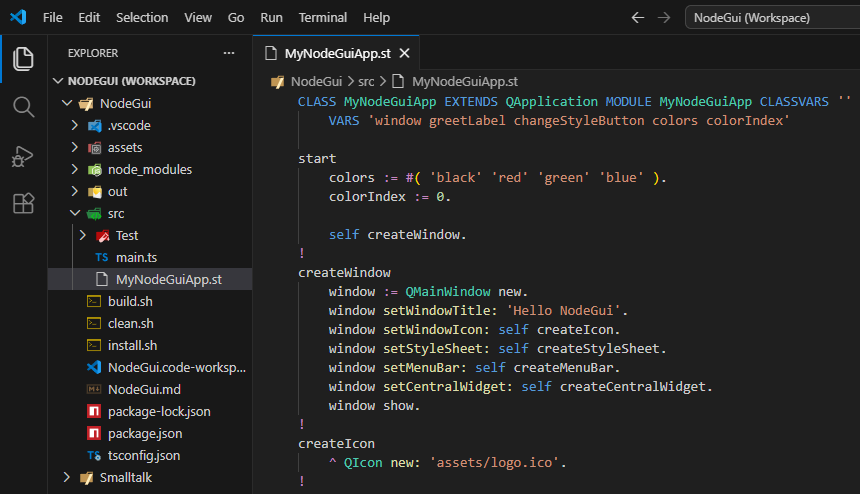

<!-- HTML fragment for the text of this tutorial page -->

<div class="tutorialTitle">Opening the NodeGui example app</div>

<div class="tutorialText">
	Start by navigating the repo folder <code>./Examples/NodeGui</code> .<br>
	Open the file <code>NodeGui.code-workspace</code> with VSCode.<br>
	Then open file <code>src/Node/MyNodeGuiApp.st</code> in VSCode.<br>
	<br>
	The result should look something like this:<br>
	<br>
</div>
